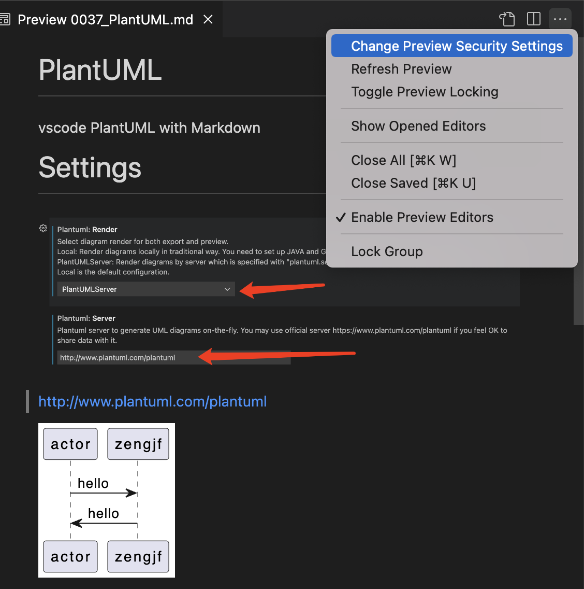
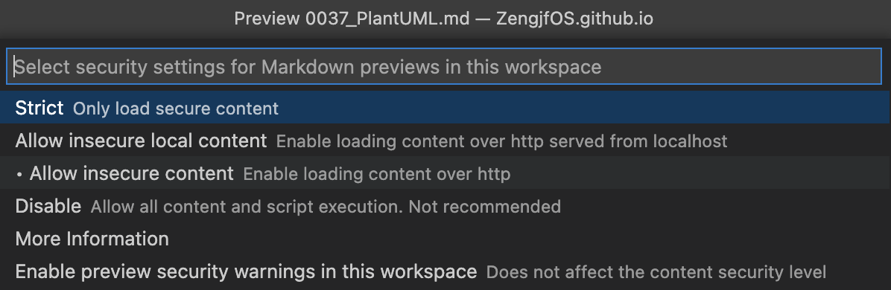
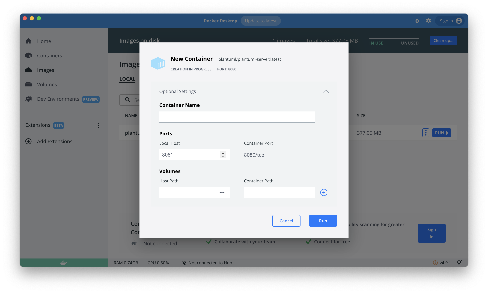
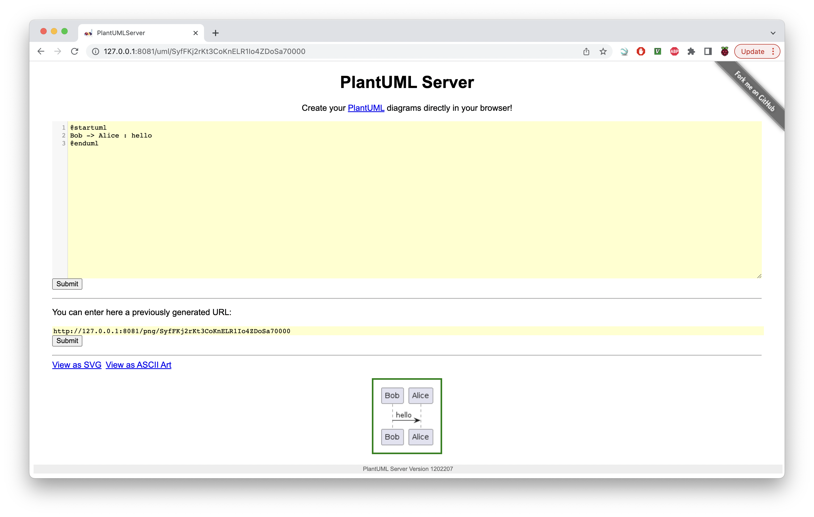

PlantUML
vscode PlantUML extension for Markdown
Settings
设置网络访问服务器地址：http://www.plantuml.com/plantuml

@startuml
actor -> zengjf: hello
actor <- zengjf: hello
@enduml
跨域访问设置
Allow insecure content


docker
https://hub.docker.com/r/plantuml/plantuml-server
docker pull plantuml/plantuml-serverdocker run -d -p 8081:8080 plantuml/plantuml-serverhttp://127.0.0.1:8081
启动plantuml server
访问plantuml server
http://127.0.0.1:8081